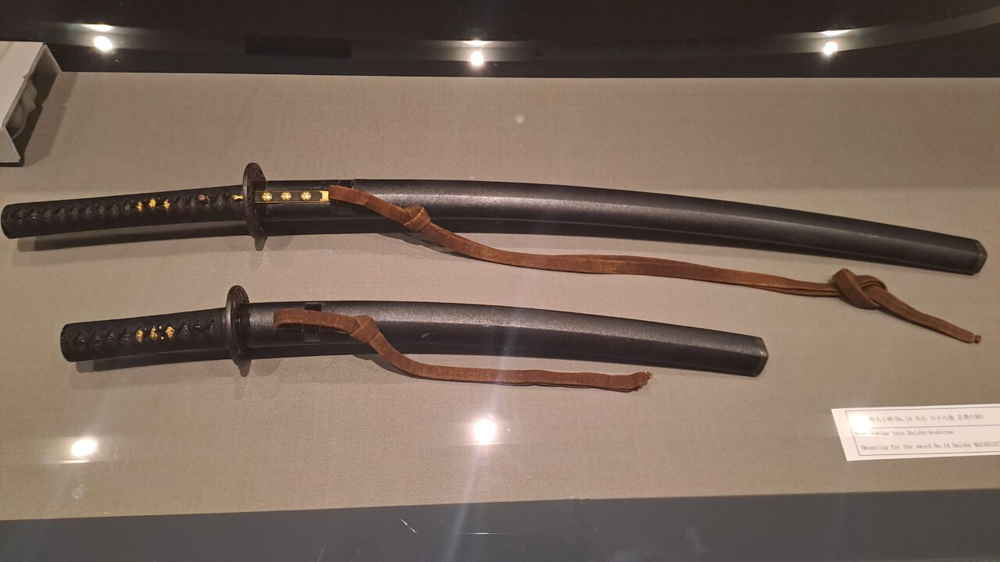

A szamurájkardok földjén...
Japán és a pengék kapcsolata évezredekre nyúlik vissza. Amikor először léptem japán földre, nem a felhőkarcolók vagy a neonfények leptek meg a legjobban — hanem az a mélyen gyökerező tisztelet, amivel itt az eszközökhöz viszonyulnak. Egy kés Japánban nem egyszerűen vágóeszköz. Története van, lelke van, és aki készíti, az nem munkás — hanem művész.
Seki városában jártam, amely évszázadok óta a japán pengegyártás fellegvára. A város neve szinte szinonimaként él a minőségi pengékkel: itt található a Kanetsune, a Kai, a Mcusta és számos kisebb műhely, ahol a hagyományos kovácsolási technikákat mai napig őrzik. A keskeny utcákon sétálva szinte érezni lehet a szénacél illatát a levegőben.
Egy helyi kovácsmester műhelyében volt szerencsém megnézni, hogyan születik egy hagyományos japán penge. A folyamat lassú és meditatív: az acélt újra és újra hajtogatják, edzik, majd kalapálják — minden ütés szándékos, minden hőfok számított. A mester elmagyarázta, hogy a japán pengekészítés filozófiája szerint a kés nem akkor készül el, amikor a penge éles, hanem amikor az egész darab harmóniában van önmagával.
A szamurájkard — a katana — talán a leghíresebb példája ennek a filozófiának. Nem fegyver: szimbólum. A bushido kódex szerint a kard a szamuráj lelkének meghosszabbítása. Ez a szemlélet nem tűnt el a modern korban — csupán átformálódott. Ma a japán zsebkések és konyhai kések hordozzák ugyanezt az örökséget: a precizitást, a tiszteletet az anyag iránt, és a funkció és forma egységét.
Ami engem a legjobban megérintett az utazás során, az a „monozukuri" koncepciója — a dolgok készítésének művészete. Japánban a kézműves nem azért dolgozik, hogy terméket állítson elő, hanem azért, mert a készítés folyamata önmagában értékes. Ez a gondolkodásmód az EDC kultúrában is tetten érhető: nem az számít, hány tárgyat hordunk magunkkal, hanem az, hogy milyen tudatosan választjuk ki őket.
Hazafelé a repülőn azon gondolkodtam, hogy talán a legfontosabb dolog, amit Japánból hoztam, nem a pengék voltak — hanem az a szemlélet, hogy minden tárgy, amelyet magunkhoz veszünk, egy kis döntés arról, hogy kik vagyunk és hogyan állunk a világhoz. A szamurájkardok földje megtanított arra, hogy egy jó kés több mint acél és fa: egy csendes kijelentés arról, hogy odafigyelünk.